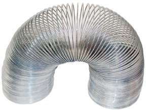
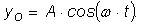
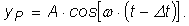
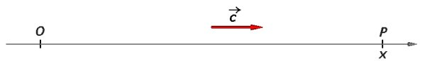
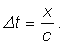
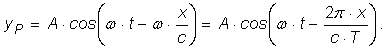
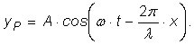
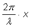
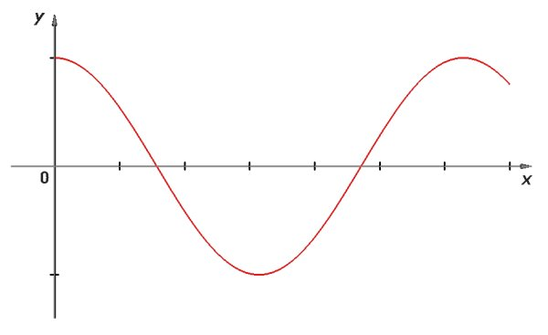
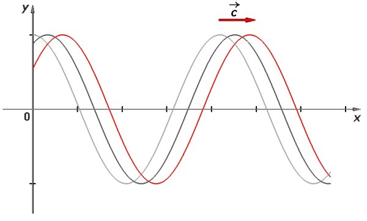

Numim mediu elastic un ansamblu de particule care interacţionează doar prin forţe elastice.
Numim mediu elastic un ansamblu de particule care interacţionează doar prin forţe elastice.
C.2. |
Modelul undei plane |
Detaliile propagării unei perturbaţii pot fi foarte complexe: modul în care interacţionează particulele care transmit din aproape în aproape perturbaţia determină atât direcţiile de propagare, precum şi vitezele de propagare pe aceste direcţii.
Deoarece oscilaţiile armonice sunt cheia înţelegerii tuturor oscilaţiilor, devine esenţial cazul unor particule care interacţionează doar prin forţe de tip elastic.
Numim mediu elastic un ansamblu de particule care interacţionează doar prin forţe elastice.
Resortul slab pe care l−ai utilizat în activităţile experimentale din secţiunea precedentă reprezintă un mediu aproape elastic. Abaterea de la elasticitate se manifestă prin amortizarea graduală a perturbaţiilor, pe măsură ce acestea se propagă în lungul resortului.
Alegând un material mai potrivit (un metal cu bune calităţi elastice), resortul ar reprezenta o aproximaţie şi mai bună a unui mediu elastic (figura 1C2−1).
|  | Fig. 1C2-1. Resort cu multe spire, realizat din metal. |
O perturbaţie declanşată într−un astfel de resort se amortizează extrem de slab (este chiar o problemă să fie "liniştit" după declanşarea unei perturbaţii!).
Dacă amortizarea ar putea fi eliminată cu totul, perturbaţia s−ar propaga în lungul resortului fără amortizare.
Numim undă plană o undă care se propagă pe o singură direcţie, cu amplitudine constantă.
Deşi unda plană este o idealizare, aceasta este cheia înţelegerii tuturor undelor. Când ai de analizat o situaţie reală, modelul undei plane îţi oferă o primă abordare, neglijând atât răspândirea perturbaţiilor pe mai multe direcţii, cât şi amortizarea acestora. Poţi introduce apoi, rând pe rând, complicaţiile necesare, pentru a obţine o analiză mai apropiată de realitate.
 Provocarea 1C2−1
Provocarea 1C2−1
Punctul O al unui mediu elastic oscilează armonic după legea

Cum te aştepţi să oscileze un punct P al acestui mediu elastic, aflat la coordonata x faţă de punctul O?
Dacă între punctele O şi P se propagă o undă plană, punctul P va oscila cu aceeaşi amplitudine A, doar ca va intra în oscilaţie mai târziu, unda având nevoie de un anumit interval de timp pentru a ajunge în punctul P (figura 1C2−2):


Fig. 1C2-2. O undă plană se propagă între punctele O şi P.
Intervalul de timp în care unda ajunge de la O la P depinde de viteza c cu care unda se propagă:

Astfel, legea de oscilaţie a punctului P devine:

Cantitatea l = c · T este o caracteristică a undei: reprezintă distanţa pe care se propagă unda într−o perioadă.
Numim lungime de undă distanţa pe care se propagă o undă într−o perioadă.
Aşadar, ecuaţia de oscilaţie a punctului P este:
|  | (1) |
Punctul P oscilează asemenea punctului O (aceeaşi amplitudine şi aceeaşi pulsaţie), dar cu defazajul  în urma lui O. Defazajul este cu atât mai mare, cu cât punctul P este mai îndepărtat de sursa O a oscilaţiilor.
Provocarea 1C2−2
Care te aştepţi să fie, la un moment dat, poziţiile particulelor mediului elastic în care se propagă unda descrisă de relaţia (1)?
Elongaţia, la momentul t, a fiecărui punct al mediului este descrisă de relaţia (1). Figura 1C2−3 prezintă elongaţiile particulelor mediului, la un moment dat.

Fig. 1C2-3. Elongaţiile particulelor mediului, la un moment dat.
Unda plană descrisă de ecuaţia (1) prezintă o periodicitate spaţială cu perioada l. Punctele aflate la o lungime de undă unul de celălalt oscilează în fază.
La momente ulterioare, configuraţia elongaţiilor se modifică − unda avansează în lungul direcţiei Ox (figura 1C2−4).

Fig. 1C2-4. Modificarea în timp a configuraţiei elongaţiilor particulelor mediului.
După o perioadă de oscilaţie, configuraţia elongaţiilor ajunge să fie iarăşi cea de la începutul perioadei − unda plană prezintă şi o periodicitate temporală.
Modelul undei plane îţi permite astfel să identifici esenţa proceselor ondulatorii (propagare, periodicitate spaţială şi temporală), evitând, pentru moment, complicaţiile proceselor ondulatorii reale (amortizare, răspândire pe mai multe direcţii etc.).